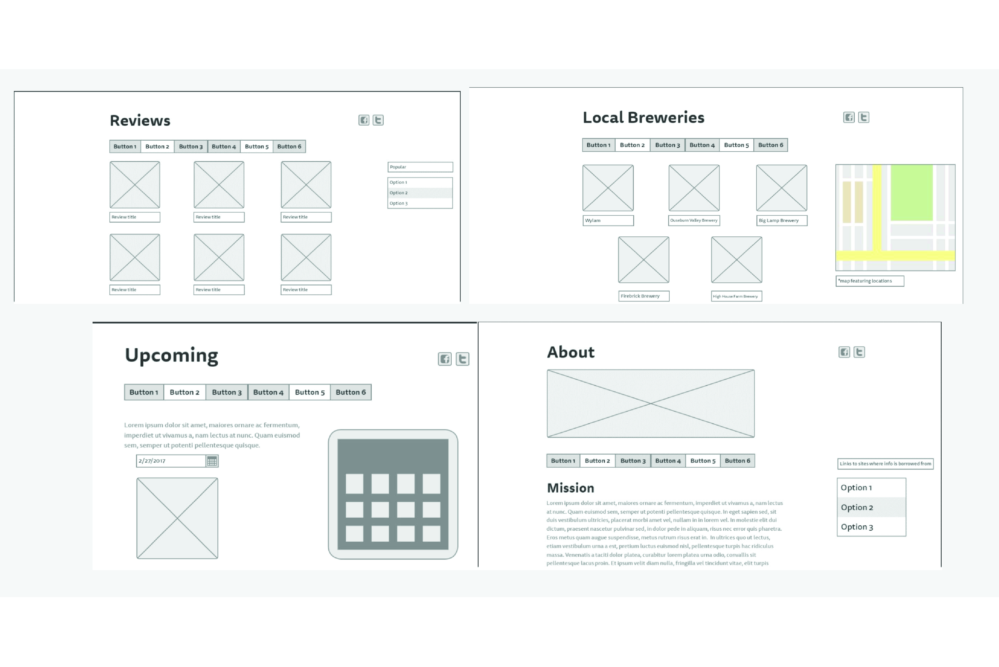

<div id="ajax-page" class="ajax-page-content">
    <div class="ajax-page-wrapper">
        <div class="ajax-page-nav">
            <div class="nav-item ajax-page-prev-next">
                <a class="ajax-page-load" href="turbopinball.html"><i class="lnr lnr-chevron-left"></i></a>
                <a class="ajax-page-load" href="instagram-marketing.html"><i class="lnr lnr-chevron-right"></i></a>
            </div>
            <div class="nav-item ajax-page-close-button">
                <a id="ajax-page-close-button" href="#"><i class="lnr lnr-cross"></i></a>
            </div>
        </div>

        <div class="ajax-page-title">
            <h1>Tynehop Webpage</h1>
        </div>

        <div class="row">
            <div class="col-sm-8 col-md-8 portfolio-block">
                <div class="owl-carousel portfolio-page-carousel">
                    <div class="item">
                        
                    </div>
                    <div class="item">
                        
                    </div>
                    <div class="item">
                        
                    </div>
                    <div class="item">
                        
                    </div>
                </div>
                
                  <script type="text/javascript">
                    jQuery(document).ready(function($){
                        $('.portfolio-page-carousel').imagesLoaded(function(){
                            $('.portfolio-page-carousel').owlCarousel({
                                smartSpeed:1200,
                                items: 1,
                                loop: true,
                                dots: true,
                                nav: true,
                                navText: false,
                                margin: 10,
                                autoHeight:true
                            });
                        });
                    });
                </script>
              
            </div>

            <div class="col-sm-4 col-md-4 portfolio-block">
                <!-- Project Description -->
                <div class="project-description">
                    <div class="block-title">
                        <h3>Description</h3>
                    </div>
                    <ul class="project-general-info">
                        <li><p><i class="fa fa-user"></i>Dustin Guillemin</p></li>
                        <li><p><i class="fa fa-globe"></i>Newcastle Upon Tyne, UK</p>
                        <li><p><i class="fa fa-calendar"></i>Spring 2017</p></li>
                    </ul>

                    <p class="text-justify">While in England I was tasked with creating a website through Wordpress for a specific user group of my choosing. In 2017 the UK was breaking into the craft beer frenzy that the United States pioneered. Due to its rising popularity, I went through the design process to create a resource for craft beer advocates in the Tyne and Wear region of northern England. This required wireframing, user stories, user research, and local hosting for the development process. Additionally, I created a social media campaign for my website, Tynehop, on instagram. To see more about this project you can view my design documentation <a href="assets/dustinguillemin-tynehop-designdoc.pdf">here.</p>
                <!-- /Project Description -->

                    <!-- Technology -->
                    <div class="tags-block">
                        <div class="block-title">
                            <h3>Technology</h3>
                        </div>
                        <ul class="tags">
                            <li><a>Wordpress</a></li>
                            <li><a>HTML</a></li>
                            <li><a>CSS</a></li>
                            <li><a>Local Hosting</a></li>
                            <li><a>Social Media Campaign</a></li>
                        </ul>
                    </div>
                    <!-- /Technology -->
                </div>
                <!-- Project Description -->
            </div>
        </div>
    </div>
</div>
